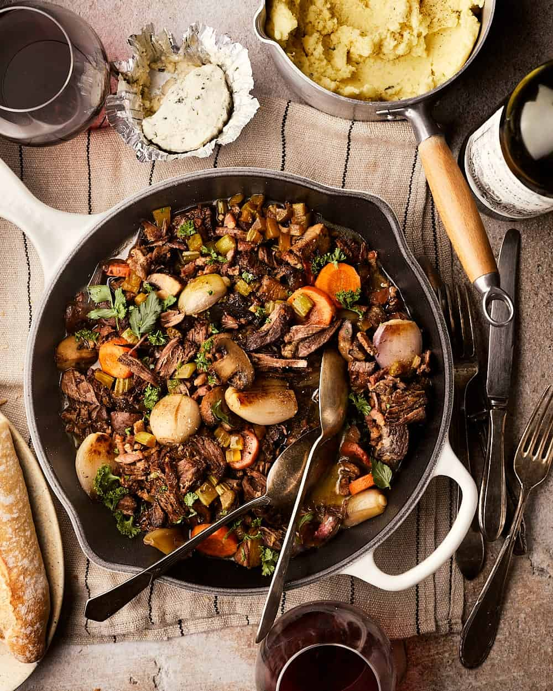

Boeuf Bourguignon

Description
The iconic french braised dish. Beef simmered for hours in the red wine of Burgundy
Ingredients
- 1.2-1.5kg of Beef Cut suited for braising
- 3 Large Carrots
- 1 Large Onion
- 4 Cloves of Garlic
- 150g of Bacon cut into thick pieces
- 400g of Mushroom
- 225g of Pearl Onions
- Parsley for garnish
- 500ml of Chicken Broth
- A bottle of dry red wine
- 15ml of Fish Sauce
- 15ml of Soy Sauce
- Thyme, Rosmary and Bay Leaf
Steps
- Brown Beef evenly in a Dutch oven andremvove
- Lower heat and add carrot, onion and garlic until browned
- Add red wine, stock, fish sauce, soy sauce and aromatics alongside Beef cut into smaller pieces
- Bring to a simmer, transfer to oven and cook for 2 hours ntil beef becomes tender
- Cook bacon in a seperate skillet and transfer to plate
- Cook Mushroom over medium high heat until browned and add diced carrots and pearl onions
- Add seperate ingredients to the dutch oven, remove from heat and serve!
Home